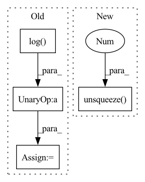

Pattern ID :30891

Before Change
)
// - log q(z). shape: [batch_shape]
rates = -torch.log(q_z).sum(-1) / math.log(BASE_LOG)
// shape: [n_codebook]
ratebook = to_numpy(rates[i]) // rate for each codebook
After Change
p_Zlx = pl_module.p_ZlX(x)
// shape: [1, batch_size, z_dim]
z = p_Zlx.mean.unsqueeze(0)
// shape: [batch_size, z_dim]
z_hat, rates, _, __ = pl_module.rate_estimator(z, p_Zlx, pl_module)
z_hat, rates = z_hat.squeeze(0), rates.squeeze(0)
In pattern: SUPERPATTERN
Frequency: 3
Non-data size: 4
Instances
Fragment ID: 90992941
Project Name: yanndubs/lossyless
Commit Name: 3657b1db52d247771959abcfdce6184706111bf5
Time: 2021-04-18
Author: yanndubois96@gmail.com
File Name: lossyless/callbacks.py
M Class Name: CodebookPlot
N Class Name: CodebookPlot
M Method Name: quantize(3)
N Method Name: quantize(3)
M Parent Class: PlottingCallback
N Parent Class: PlottingCallback
M File Name: lossyless/callbacks.py
N File Name: lossyless/callbacks.py
M Start Line: 299
M End Line: 317
N Start Line: 295
N End Line: 302
'>
Before Change
img_mag = img_fft.abs()
img_mag[img_mag == 0] = 1.
img_mag = torch.log(img_mag)
img_phi = img_fft.angle()
img_mag = 2 * (img_mag - self.mag_min) / (self.mag_max - self.mag_min) - 1
img_phi = img_phi / np.pi
After Change
img_amp, img_phi = normalize_FC(img_fft, amp_min=self.amp_min, amp_max=self.amp_max)
img_fft = torch.stack([img_amp.flatten(), img_phi.flatten()], dim=-1)
return img_fft, (self.amp_min.unsqueeze(-1), self.amp_max.unsqueeze(-1))
def __len__(self):
return len(self.ds)
'>
Fragment ID: 90992932
Project Name: juglab/fourierimagetransformer
Commit Name: 931f91c1b27b26ccf5f362b49a9ed4f667944627
Time: 2021-03-30
Author: tibuch@mpi-cbg.de
File Name: fit/datamodules/super_res/SResFCDataset.py
M Class Name: SResFourierCoefficientDataset
N Class Name: SResFourierCoefficientDataset
M Method Name: __getitem__(2)
N Method Name: __getitem__(2)
M Parent Class: Dataset
N Parent Class: Dataset
M File Name: fit/datamodules/super_res/SResFCDataset.py
N File Name: fit/datamodules/super_res/SResFCDataset.py
M Start Line: 29
M End Line: 41
N Start Line: 30
N End Line: 35
'>
Before Change
// 计算第二个source的分值
// shape: (batch_size, seq_max_len_2)
combined_log_probs_2 = (source2_decoder_attention_score + 1e-45).log() + (target_to_source2.float() + 1e-45).log() //\
//+ (source2_token_mask.float() + 1e-45).log()
// shape: (batch_size,)
log_probs_2 = logsumexp(combined_log_probs_2) // log(exp(a[0]) + ... + exp(a[L]))
// 计算 log(p1 * gate + p2 * (1-gate))
log_gate_score_1 = (gate_score + 1e-45).log() // shape: (batch_size,)
log_gate_score_2 = (1 - gate_score + 1e-45).log() // shape: (batch_size,)
item_1 = (log_gate_score_1 + log_probs_1).unsqueeze(-1) // shape: (batch_size, 1)
item_2 = (log_gate_score_2 + log_probs_2).unsqueeze(-1) // shape: (batch_size, 1)
step_log_likelihood = logsumexp(torch.cat((item_1, item_2), -1)) // shape: (batch_size,)
After Change
log_gate_score_2 = (1 - gate_score + 1e-20).log() // shape: (batch_size,)
item_1 = (log_gate_score_1 + combined_log_probs_1).unsqueeze(-1)
item_2 = (log_gate_score_2 + combined_log_probs_2).unsqueeze(-1)
step_log_likelihood = logsumexp(torch.cat((item_1, item_2), -1))
'>
Fragment ID: 90992934
Project Name: xiaolongjean/multi-source-pointer-network
Commit Name: 4ff78a03256eb5578038c83d0eb424b84e437c4f
Time: 2020-10-17
Author: 771651685@qq.com
File Name: src/model.py
M Class Name: MS_Pointer
N Class Name: MS_Pointer
M Method Name: get_negative_log_likelihood(9)
N Method Name: get_negative_log_likelihood(9)
M Parent Class: nn.Module
N Parent Class: nn.Module
M File Name: src/model.py
N File Name: src/model.py
M Start Line: 454
M End Line: 472
N Start Line: 437
N End Line: 447